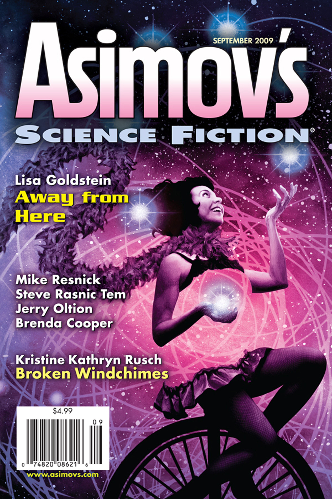

Over the last century, magazines have slowly moved into more specialized, fragmented groupings. This transformation from general-interest to niche publications began with the popularization of television. To survive the threat posed by the success of broadcast media, print publications worked to stand out from their competitors by developing market niches. During this transition, magazine editors found that by specializing they were also appealing to advertisers hoping to reach specific audiences. No longer were ads just going out to the general public. Instead, advertisers could target groups by gender, age, race, class, and social and cultural interests.Richard Campbell, Christopher R Martin, Bettina Fabos, “Magazines in the Age of Specialization: Chapter Nine,” pp. 255–284, Media and Culture: An Introduction to Mass Communication, http://www.profbob.com/MCOM%2072/Media%20Culture%20TEXT/Media%20Culture%20PPTs/Chapter%209.ppt.
From the medical field to the auto industry, specialization has become necessary to compete in an ever-growing market. Yet the trend is perhaps most obvious in mass media and in the publishing industry in particular. “In 2006, the Magazine Publishers of America trade organization listed more than 40 special categories of consumer magazines.”Richard Campbell, Christopher R Martin, Bettina Fabos, “Magazines in the Age of Specialization: Chapter Nine,” pp. 255–284, Media and Culture: An Introduction to Mass Communication, http://www.profbob.com/MCOM%2072/Media%20Culture%20TEXT/Media%20Culture%20PPTs/Chapter%209.ppt. This wide variety of niche publications reflects the increasing specificity of markets and audiences. “In publishing, demand for specialized magazines and books can be evidenced by looking at the magazine rack. [There are] magazines focusing on photography to cars, to economics and foreign affairs and more.”Jennifer Hess, “Specialization Trends in Business,” Helium.com, October 5, 2007, http://www.helium.com/items/664459-specialization-trends-in-business. Specialization is likely to increase, rather than decrease. “Market fragmentation has and probably will continue to proliferate. Customization and individualization will probably be the continuing trend.”Jennifer Hess, “Specialization Trends in Business,” Helium.com, October 5, 2007, http://www.helium.com/items/664459-specialization-trends-in-business.
Nearly every trade group produces some sort of professional publication for its members. Many trade organizations even have their own libraries that house publications solely dedicated to their specific groups. For example, if a person wishes to find information on agriculture, forestry, fishing, and hunting organizations, the National Agricultural Library in Beltsville, Maryland, near Washington, DC, might offer a starting point. This library is one of four national libraries of the United States and has one of the world’s largest agricultural information collections and links a nationwide network of state land-grant and U.S. Department of Agriculture field libraries.Career Resource Library, CareerOneStop, http://www.acinet.org/crl/library.aspx?LVL2=99&LVL3=n&LVL1=58&CATID=744&PostVal=9. This is but one example of the array of trade-group publications available. Resources such as the Career Resource Library are also available to those who wish to browse publications by trade groups.
Academic journals have, in some form, been around since the early years of magazine publication. During the 17th century, the Universal Historical Bibliothèque became the first journal to invite scholarly contributions. Today, hundreds of scholarly journals exist, such as the American Economic Review and The Journal of Marriage and Families, and every academic field has its own array of journals to which scholars can contribute. Most university libraries allow students and faculty access to these journals via library databases.
In every academic field, journals are ranked based on the types of articles they publish and on their selectiveness. Most academic journals use a peer-reviewing process to determine which articles are printed. During this process, a panel of readers reviews an anonymous article and then decides whether to accept the paper, accept with changes, or reject it altogether. Scholarly publication is essential for graduate students and university faculty members alike as they seek to disseminate their ideas and progress in their careers.
With faith at the center of many individuals’ lives, it is hardly surprising that there are hundreds of magazines dedicated to religious groups. From Christianity Today to Catholic Digest, Christian publications make up the largest group of religious magazines. But Christianity is not the only faith represented in periodicals. Kashrus Magazine targets the Jewish community, and Shambhala Sun is affiliated with the Buddhist faith. Additionally, certain magazines, such as CrossCurrents, are designed for people of all faiths. The magazine’s publishers state that CrossCurrents serves as “a global network for people of faith and intelligence who are committed to connecting the wisdom of the heart and the life of the mind.”CrossCurrents, http://www.aril.org/.
Political groups also have capitalized on the magazine industry. Whether liberal or conservative, most people can find a publication that reflects their political opinions. Two such magazines are The American Prospect and The American Conservative. The American Prospect targets Democrats with “thoughtful views of America’s progressive liberal Democratic issues, ideas, politics and policy.”“Top 10 Political Magazines,” AllYouCanRead.com, http://www.allyoucanread.com/top-10-political-magazines/. Conversely, the American Conservative is aimed at right-leaning individuals. Edited by well-known conservatives Pat Buchanan and Taki Theodoracopulos, this biweekly “is dedicated to reigniting the conservative conversation, engaging the neo-conservative agenda through its espousal of traditional conservative themes.”“Top 10 Political Magazines,” AllYouCanRead.com, http://www.allyoucanread.com/top-10-political-magazines/.
Although today not as many pulp magazines publish as did at the style’s height of popularity, during the 1930s, this unique niche still plays an important role in the magazine industry. One such example is Asimov’s Science Fiction, a science fiction magazine founded in 1977 and still popular today. Founded because “one of science fiction’s most influential and prolific writers, Isaac Asimov wanted to provide a home for new SF (science fiction) writers—a new magazine that young writers could break into. Asimov’s Science Fiction remains that home, as well as the publisher of some of the field’s best known authors.”Asimov’s Science Fiction, http://www.asimovs.com/201007/index.shtml. True to its original intention, the magazine publishes stories of varying lengths for the avid science fiction fan.
Figure 5.7
Asmiov’s Science Fiction is a modern pulp magazine reaching out to sci-fi readers around the globe.
Another modern example of a genre magazine is Ellery Queen’s Mystery Magazine. First launched in 1941 to “raise the sights of mystery writers generally to a genuine literary form,” to “encourage good writing among our colleagues by offering a practical market not otherwise available,” and to “develop new writers seeking expression in the genre,”“About EQMM: A Brief History of Ellery Queen’s Mystery Magazine,” The Mystery Place, http://www.themysteryplace.com/eqmm/about/history.aspx. the journal has published a large number of now famous writers including Rudyard Kipling, William Faulkner, Ernest Hemingway, Norman Mailer, and Alice Walker. Today, the publication prides itself on being “on the cutting edge of crime and mystery fiction, offering readers the very best stories being written in the genre anywhere in the world.”“About EQMM: A Brief History of Ellery Queen’s Mystery Magazine,” The Mystery Place, http://www.themysteryplace.com/eqmm/about/history.aspx. Though pulp and genre fiction magazines tend to have a fairly low circulation—Asimov’s circulation in 2009 was about 17,000—the caliber of the authors they often attract gives these publications a great degree of influence within their respective niches.Charlie Jane Anders, “Has The Print Magazine Circulation Crash Started To Level Off?” io9, June 25, 2009, http://io9.com/5302638/has-the-print-magazine-circulation-crash-started-to-level-off.
Perhaps the most populated classification is that of hobby and special-interest magazines, a reflection of the wide array of hobbies and interests that different individuals enjoy. Within this classification of journals, one can find magazines on such topics as sports (Sports Illustrated), wellness (Health), cooking (Bon Appétit), home decoration and renovation (This Old House), and travel and geography (National Geographic).
Readers interested in specific hobbies can generally find a magazine that caters to them. Photographers, for example, can subscribe to the British Journal of Photography, the world’s longest-running photography magazine, in publication since 1854. This journal prints “profiles of emerging talent alongside star names, a picture-led Portfolio section, business analysis and detailed technology reviews.”British Journal of Photography, “About Us,” http://www.bjp-online.com/static/about-us. Music enthusiasts can choose from an array of publications ranging from more general ones such as Spin and the International Early Music Review to highly specific such as the Journal of the International Double Reed Society and Just Jazz Guitar. There are also magazines entirely devoted to crafting, such as Creating Keepsakes for scrapbook enthusiasts, and for pet ownership, such as the appropriately named Pet.
Fashion has provided a highly lucrative and visible interest magazine market. Founded in 1892, the most famous fashion magazine is Vogue. “Vogue has been America’s cultural barometer, putting fashion in the context of the larger world we live in—how we dress, live, socialize; what we eat, listen to, watch; who leads and inspires us.”Vogue, “Mission Statement,” http://www.condenastmediakit.com/vog/index.cfm. The magazine has a huge following, with a circulation topping 1.2 million readers. Vogue’s mission statement declares an intent to lead the way in the fashion magazine industry:
Vogue’s story is the story of women, of culture, of what is worth knowing and seeing, of individuality and grace, and of the steady power of earned influence. For millions of women each month, Vogue is the eye of the culture, inspiring and challenging them to see things differently, in both themselves and the world.Vogue, “Mission Statement,” http://www.condenastmediakit.com/vog/index.cfm.
Despite Vogue’s high circulation, most special-interest magazines have a smaller readership. This can be worrisome for editors charged with adding more subscriptions to make a larger profit. However, the appeal of such specific audiences generates more revenue from advertisers, who can purchase magazine space knowing that their ads are reaching a targeted audience.
In recent years, Vogue has served as inspiration for two major films: The Devil Wears Prada (2006) and The September Issue (2009). Based on Lauren Weisberger’s novel of the same name, The Devil Wears Prada is a feature film about a young woman living in New York dreaming of becoming a magazine writer. She lands a job as the assistant to the city’s most ruthless magazine editor, Miranda Priestly—played by Meryl Streep—who runs Runway magazine, a fictionalized version of Vogue. This coming-of-age story highlights the work that goes into producing a magazine of such prestige. Streep was nominated for an Oscar award for her performance and, appropriately for a film about fashion, the costume designer was also nominated for Best Achievement in Costume Design.
The September Issue is a documentary chronicling Vogue Editor-in-Chief Anna Wintour’s preparation for the 2007 fall fashion issue. Wintour, the editor upon whom Streep’s character in The Devil Wears Prada was loosely based,Steven Zeitchik, “Meryl Streep and her ‘Devil Wears Prada’ Director Jump Into New Springs,” 24 Frames (blog), Los Angeles Times, February 8, 2011, http://latimesblogs.latimes.com/movies/2011/02/meryl-streep-david-frankel-hope-springs-prada.html. is well known for being a powerful influence on the fashion industry and a demanding editor. The film, however, humanizes her, while still demonstrating her obsession with fashion and with perfection in her magazine.
The success of both films reveals a fascination with the fashion and publishing industries. The fact that these two films would be released as the magazine industry is in decline is surprising but perhaps reflects an interest in journalism from a younger audience. The use of publishing as a topic in the film medium shows how magazines, though struggling, remain relevant and how special-interest magazines, like those in fashion, can transcend the medium and cross over into other mass media.
Consider the specialized magazines discussed in this section, as well as others you are familiar with, and identify whether or not you are among the target audience for each. Then, read a copy of a magazine targeting a specialized group or demographic you are not a part of. For example, if you’re a man, examine a copy of Cosmopolitan, or if you have no interest in fashion, look through an issue of Vogue. Then, answer the following writing prompts.